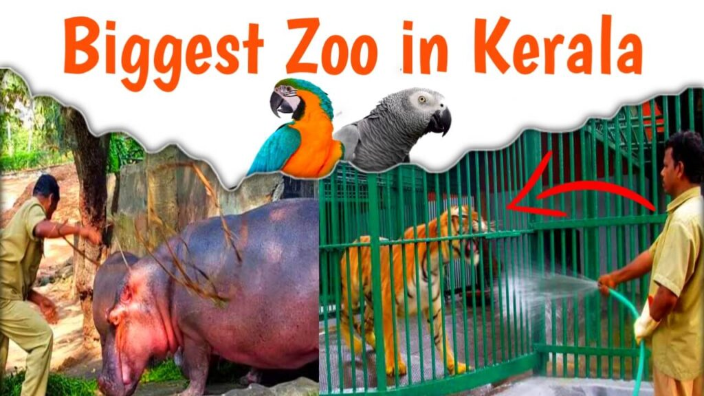

Sree Pathmanabha Swami Temple

The Shree Padmanabhaswamy Temple is a Hindu temple, dedicated to Vishnu, in Thiruvananthapuram, the capital of the state of Kerala, India. It is one of the 108 Divya Desams dedicated to Lord Vishnu. It is widely considered as the world's richest Hindu temple.[1] The name of the city of 'Thiruvananthapuram' in Malayalam and Tamil translates to "The City of Ananta" (Ananta being a form of Vishnu).[2] The temple is built in an intricate fusion of the Kerala style and the Dravidian style of architecture, featuring high walls, and a 16th-century gopura.[3][4] While as per some traditions the Ananthapura temple in Kumbla in Kasaragod district in Kerala is considered as the original spiritual seat of the deity ("Moolasthanam"), architecturally to some extent, the temple is a replica of the Adikesava Perumal temple in Thiruvattar in Kanyakumari district in Tamil Nadu.[5]
The principal deity is Padmanabhaswamy (Vishnu), who is enshrined in the "Anantha Shayana" posture, the eternal yogic sleep on the infinite serpent Adi Shesha.[6] Padmanabhaswamy is the tutelary deity of the Travancore royal family.
Napier Mueseum
The Napier Museum is an art and natural history museum situated in Thiruvananthapuram, India.The Museum is grounds to the Trivandrum Zoo, one of the oldest zoological gardens in India. The zoo was established in 1857 over 55 acres (220,000 m2) of land.[2] It also contains the Sree Chitra Art Gallery, a separate art gallery established in 1935.The set of museums, along with the zoo, are managed by the Department of Museums and Zoos, a branch of the Department of Cultural Affairs of Kerala.A building was constructed in 1857 during the reign of Uthram Thirunal Marthanda Varma,[3] and later demolished in 1874 to lay foundation for a new building, during the reign of Ayilyam Thirunal.
The Governor of Madras in 1872 appointed Robert Chisholm, a consulting architect of the Madras Government to design a new museum.
Zoo

The zoo is home to about 82 species of animals that include lion-tailed macaque, Nilgiri langur, Indian rhinoceros, Asiatic lion, royal Bengal tiger, white tiger, leopard, Asian elephants, giraffes, hippos, zebras, and Cape buffalos.
Zoos allow us to experience nature and are a great resource for understanding more about conservation, biodiversity and sustainability, bringing many positive benefits to human mental health and wellbeing